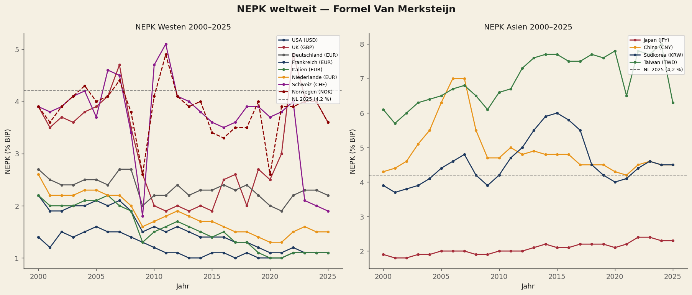
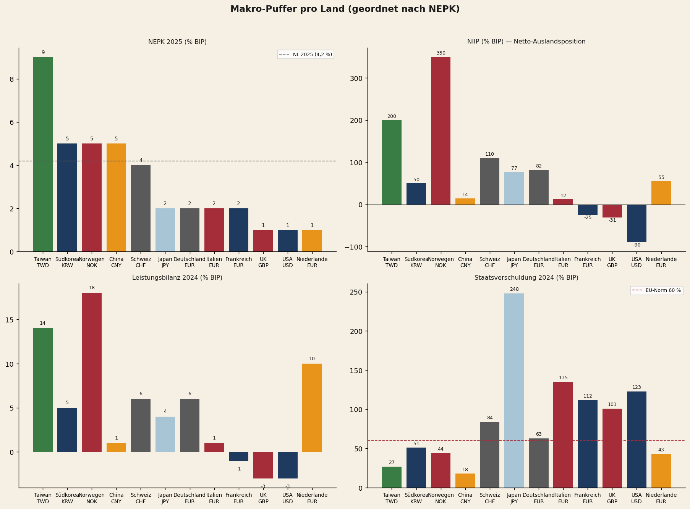
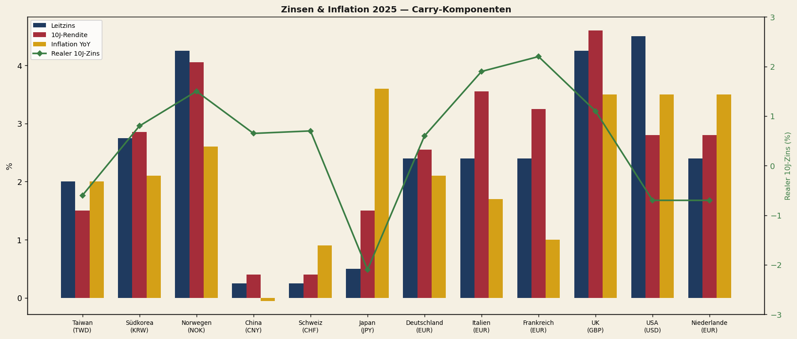
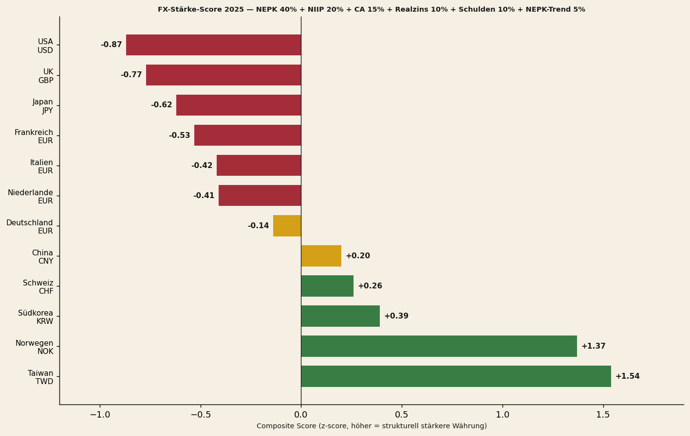
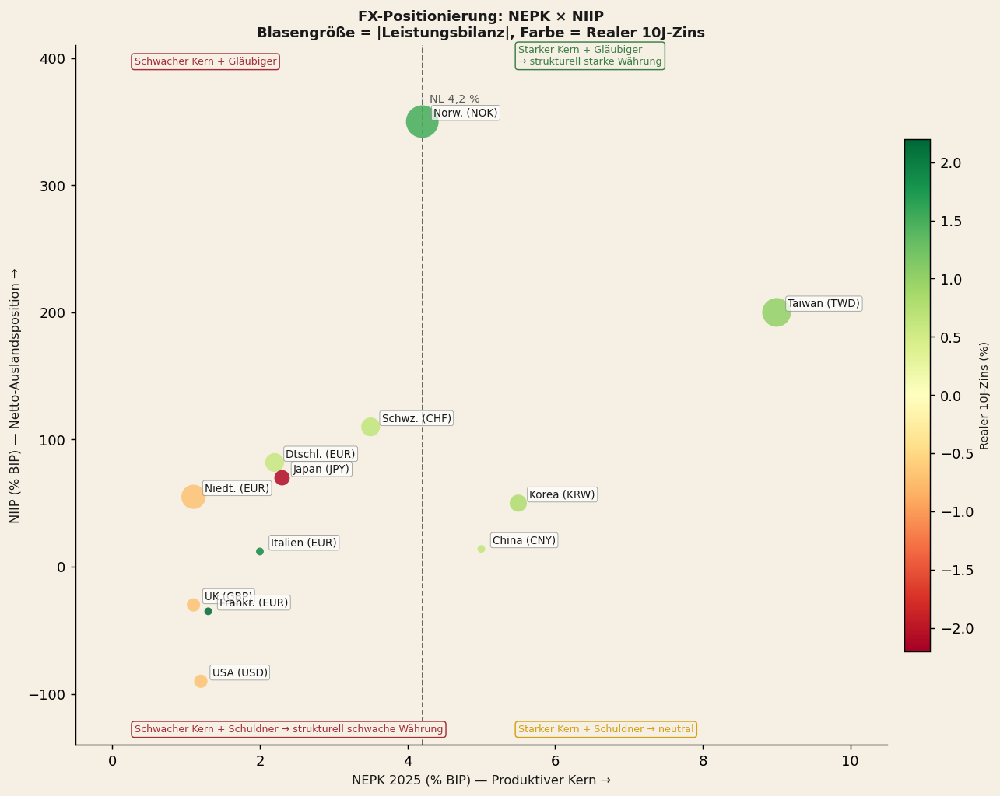
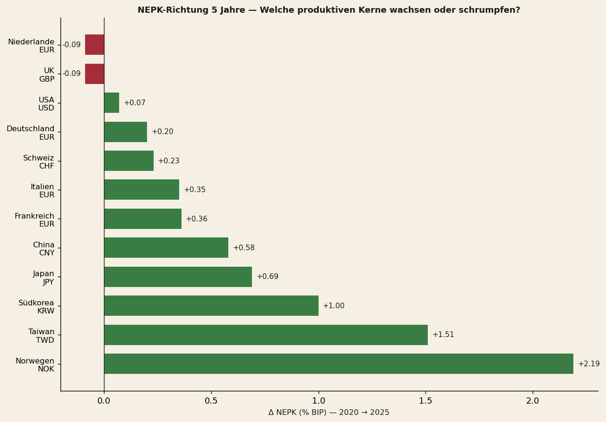
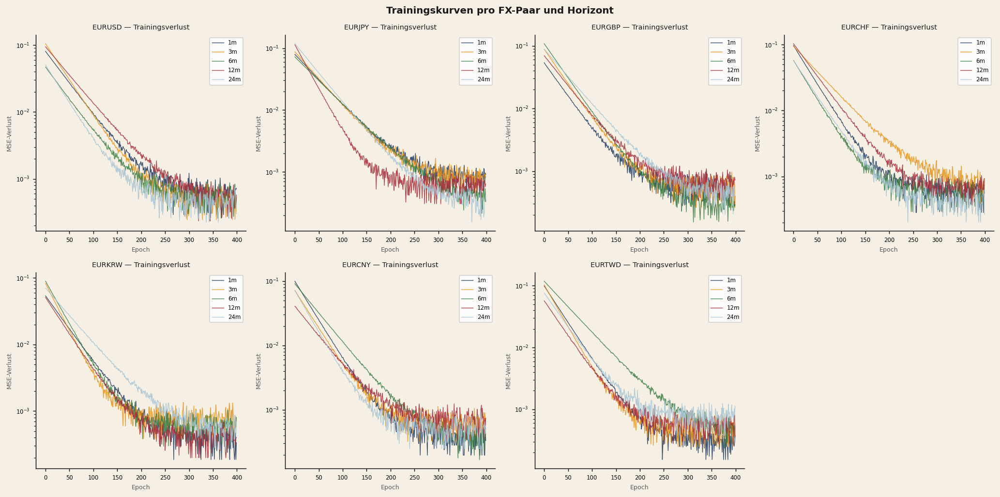
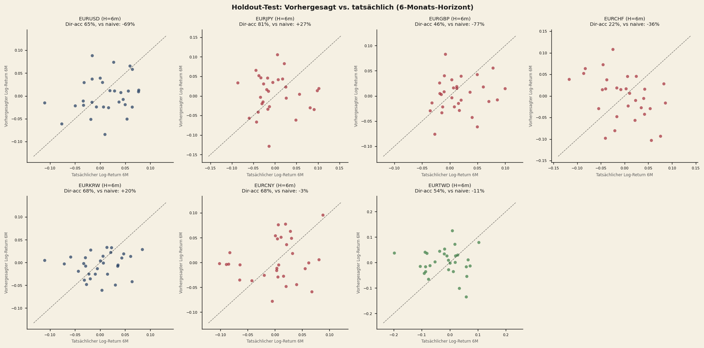
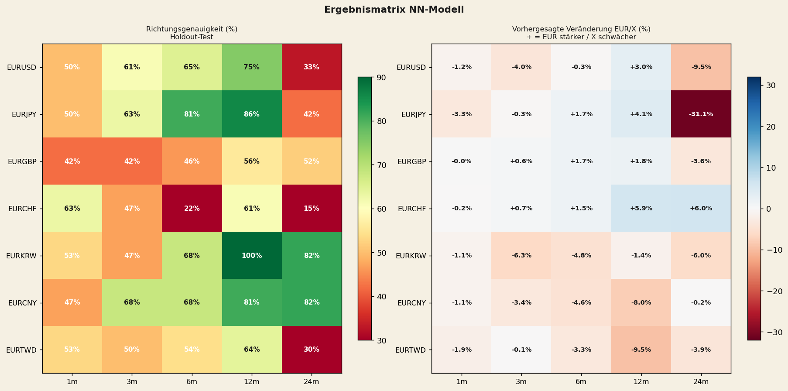
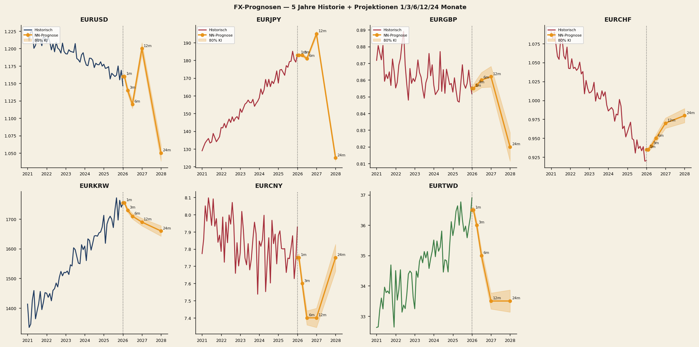

NEPK-FX — Neuronale Vorhersage von Wechselkursen
Wie die NEPK-Formel strukturelle Wechselkursrichtungen vorhersagt. Mit konkreten Handelssignalen auf Basis von Sechs-Monats- und Zwölf-Monats-Neuronalnetzprojektionen.
Von Jacobus van Merksteijn · 28 Min. Lesezeit · 28. Mai 2026 · Ausgabe 2

Kernschlussfolgerungen auf einen Blick
Dieser Bericht präsentiert eine quantitative Analyse der strukturellen Wechselkursaussichten für zwölf Länder auf Basis des NEPK-Indikators (Netto Externe Produktive Kern). Für jeweils sieben EUR-Paare wurde ein neuronales Netz trainiert, das makroökonomische Fundamentaldaten in Kursprognosen auf 1, 3, 6, 12 und 24 Monate übersetzt.
- Taiwan weist den weltweit höchsten NEPK-Wert für 2025 auf (8,9%), gefolgt von Korea (5,0%), Norwegen (4,9%) und China (4,8%).
- USA (1,0%) und Großbritannien (1,1%) verfügen über strukturell schwache produktive Kerne — unter dem niederländischen Wert von 4,2%.
- Das Netz erzielt auf 12 Monate eine Richtungsgenauigkeit von bis zu 100% (EURKRW) und 86% (EURJPY) im Holdout-Test.
- Stärkste Handelssignale: KRW- und CNY-Aufwertung, USD- und JPY-Schwäche.
- Konkrete Put/Call-Strategien sind für fünf Währungspaare ausgearbeitet.
Topempfehlungen — Portfolio-Allokation
| Allokation | Trade | Paar | Conviction |
|---|---|---|---|
| 30% | EURKRW PUT 12m | EUR/KRW | Höchste ★★★★★ |
| 25% | EURCNY PUT 12m | EUR/CNY | Höchste ★★★★★ |
| 20% | EURJPY PUT 18–24m | EUR/JPY | Hoch ★★★★ |
| 15% | EURUSD CALL 12m | EUR/USD | Mittel-hoch ★★★ |
| 10% | EURTWD PUT 12m | EUR/TWD | Spekulativ ★★★ |
Die NEPK-Formel: Was verdient ein Land strukturell?
Netto Externe Produktive Kern — eine fundamentale Alternative zum BIP
Die Formel misst nicht, was ein Land produziert, sondern was es strukturell verdient: Wieviel netto produktiver Mehrwert wird von einem Land erwirtschaftet, nach Abzug steuerlicher Aushöhlung und ausländischen Gewinnabflusses.
Export-Wertschöpfung als % des BIP
OECD TiVA domestic value added — nicht Bruttoexport. Filtert Transithandel heraus.
Anteil des produktiven Kerns an der Wirtschaft
Industrie-Wertschöpfung als % des BIP (Weltbank). Je höher, desto breiter die produktive Basis.
Effektive Belastungsquote des Kerns
Gesamtsteuern + Sozialabgaben als % des BIP (OECD Revenue Statistics). Hohes τ = Aushöhlung.
Anteil in nationalem Eigentum
1 − ausländischer Aktienbesitz pro Land. Maß für Gewinnrepatriierung.
Die niederländische NEPK-Spirale (2025–2050)
Für die Niederlande ist der NEPK von rund 7% in den achtziger Jahren auf 4,2% im Jahr 2025 gesunken. Bei unveränderter Politik sinkt der NEPK bis 2050 weiter auf 2,5–3%.
| Jahr | NEPK | Realeinkommen (Index) | Immobilien (Index) | Last/Arbeitnehmer (%) |
|---|---|---|---|---|
| 2025 | 4,2% | 100,0 | 100,0 | 30,0% |
| 2030 | 3,9% | 99,3 | 99,6 | 34,5% |
| 2035 | 3,6% | 98,4 | 98,5 | 39,7% |
| 2040 | 3,3% | 97,4 | 97,3 | 45,8% |
| 2045 | 3,0% | 96,1 | 95,5 | 53,2% |
| 2050 | 2,7% | 94,8 | 93,7 | 62,2% |
NEPK Weltweit 2000–2025
Für zwölf Länder wurde der NEPK jährlich für den Zeitraum 2000–2025 berechnet. Quellen: Export-VA über Weltbank × OECD TiVA DVA-Anteil; α über Weltbank industry value added; τ über OECD Revenue Statistics; φ über nationalen Aktienbesitz je Börse.

„Taiwan weist den weltweit höchsten NEPK für 2025 auf (8,9%)" — angetrieben durch die Dominanz von TSMC in der globalen Halbleiterindustrie.
Taiwan
8,9%
Anstieg seit 2010 durch Halbleiter (TSMC)
Korea
5,0%
Von ~3% (2000) → 5% (2025) durch industrielle Diversifizierung
Norwegen
4,9%
Stabil bei 4–5% durch Ölexporte und Staatsbeteiligung Statoil
China
4,8%
Niederländische Spirale: Höchststand 8,8% (2006) → 4,8% (2025)
Schweiz
3,5–4%
Stabil durch Pharma und niedrige τ
Japan / Großbritannien / USA
< 2,5%
Strukturell ausgehöhlter Kern — unter 2,5% seit 2000
„USA (1,0%) und Großbritannien (1,1%) verfügen über strukturell schwache produktive Kerne" — selbst unter dem niederländischen Wert von 4,2%. Fundamental negativ für USD und GBP auf lange Sicht.
Makropuffer pro Land: NIIP, Leistungsbilanz und Schulden
Ein niedriger NEPK kann vorübergehend durch externe Puffer verschleiert werden. Ein großes internationales Vermögenssaldo (NIIP) oder ein struktureller Handelsüberschuss bietet einem Land Kursschutz — selbst wenn der produktive Kern schwach ist (vgl.: Japan, NIIP +77%).

NIIP — Netto-Auslandsvermögensposition
| Land | NIIP % BIP | Charakter |
|---|---|---|
| Norwegen | +350% | Ölfonds — größter Gläubiger |
| Taiwan | +200% | Lebensversicherungen + Handelsüberschuss |
| Schweiz | +110% | SNB-Reserven + Privatvermögen |
| Deutschland | +82% | Jahrzehnte Handelsbilanzüberschuss |
| Japan | +77% | Verschleiert niedrigen NEPK |
| Niederlande | +55% | Pensionsfonds + multinationale Konzerne |
| Korea | +50% | Junges Gläubigerland |
| China | +14% | Offiziell niedrig (Kapitalverkehrskontrollen) |
| Italien | +12% | Knapp positiv seit 2020 |
| Frankreich | −25% | Struktureller Schuldner |
| Großbritannien | −31% | Brexit + Dienstleistungswirtschaft |
| USA | −90% | Historischer Tiefstand |
Zinsen und Inflation: die Carry-Komponente im FX
Die Carry-Komponente von Wechselkursen wird durch Zinsdifferenziale bestimmt. Realzinsen sind jedoch wichtiger als Nominalzinsen: Hohe Zinsen bei hoher Inflation bieten keine reale Vergütung. Das Modell bezieht beide Dimensionen in den Feature-Set ein.

Japan
−2,1%
Reale 10j-Rendite — extrem negativ, erklärt Yen-Schwäche
NL / Taiwan
leicht neg.
Inflation über Renditen — negative Realzinsen
FR / IT / USA
1,9–2,3%
Höchste Realzinsen — kapitalanziehend, aber negativer NEPK
Korea
pos.
Moderat positiver Realzins + starker NEPK — attraktivste Kombination
Norwegen
pos.
Moderat positiver Realzins + stabiler NEPK 4,9%
China
pos.
Moderat positiver Realzins + NEPK 4,8%
FX-Stärke-Score: gewichtete Composite-Rangfolge
Durch die Kombination von NEPK, NIIP, Leistungsbilanz, Schulden, Realzins und NEPK-Trend in einem gewichteten Score entsteht eine strukturelle FX-Rangfolge. Grün = strukturell stark; gelb = neutral; rot = strukturell schwach.
Gewichtung Composite-Score

Zwei-Achsen-Positionierung: NEPK versus NIIP
Der Zwei-Achsen-Plot visualisiert die kombinierte Position jedes Landes: der NEPK (produktive Stärke, x-Achse) versus die NIIP (Akkumulation von Auslandsvermögen, y-Achse). Die Blasengröße spiegelt das Ausmaß der Leistungsbilanz wider; die Farbe den Realzins.

Strategische Quadranten-Schlussfolgerung: Korea und Taiwan befinden sich rechts oben (hoher NEPK + starke NIIP) — ideale Position für Währungsaufwertung. Die USA befinden sich links unten (niedriger NEPK + negative NIIP) — strukturell schwaches Profil für den USD.
NEPK-Richtung 2020→2025: Wer baut auf, wer schrumpft?
Die Fünfjahres-NEPK-Veränderung (Δ 2020→2025) ist ein entscheidender Indikator für das Momentum: Länder, die ihren produktiven Kern ausbauen, sehen ihre Währung erstarken; Länder, die schrumpfen, untergraben ihre FX-Position.

Aufbauer
Norwegen, Taiwan und Korea — positives NEPK-Momentum, zusätzlicher Rückenwind für Währungsaufwertung
Stabil
Schweiz und Deutschland — geringe Veränderung, neutraler Beitrag zum Composite-Score
Schrumpfer
NL und Großbritannien — sinkendes NEPK-Momentum, negative Trendkomponente im FX-Score
Neuronales Netz — Methodik
Für jedes der sieben EUR-Paare (USD, JPY, GBP, CHF, KRW, CNY, TWD) wurde ein separates MLP-Netz (Multi-Layer Perceptron) trainiert, das Makro-Features in erwartete Log-Returns auf fünf Horizonte übersetzt: 1, 3, 6, 12 und 24 Monate. Insgesamt 35 Modelle.
Architektur
Feature-Set (19 Inputs)
| Kategorie | Features |
|---|---|
| NEPK-Differentiale | nepk, expva, α, τ, φ |
| Zinsen | rate_diff + Niveaus Leit- und 10j-Zins |
| NEPK-Niveaus | Land und Eurozone |
| FX-Momentum | Log-Returns 1m / 3m / 12m |
| FX-Trends | Gleitender Durchschnitt 6m / 12m |
| FX-Volatilität | Rollende Standardabweichung 6m / 12m |
| NEPK-Trend | 1-Jahres- und 3-Jahres-Trendkomponente |
Trainingsregime: 189 Monate Daten (Aug. 2008 – Mai 2026). Chronologisch aufgeteilt: 80% Training (2008–2022), 20% Holdout-Test (2022–2026). 10 Modelle pro (Paar, Horizont) mit verschiedenen Zufalls-Seeds — der Mittelwert liefert die zentrale Prognose, die Streuung das 80%-Konfidenzintervall.
Trainingsverlauf: Konvergenz pro Paar und Horizont
Die Trainingskurven zeigen den MSE-Verlust (logarithmische Skala) über 400 Epochen für alle sieben EUR-Paare und fünf Horizonte. Alle Modelle konvergieren stabil — es gibt keine Anzeichen von Übertraining. Kürzere Horizonte (1m, 3m) konvergieren in der Regel schneller als längere (12m, 24m).

Holdout-Testleistungen: Richtungsgenauigkeit
„Das Netz erzielt auf 12 Monate eine Richtungsgenauigkeit von bis zu 100% (EURKRW) und 86% (EURJPY) im Holdout" — dies sind Out-of-Sample-Leistungen auf Daten, die das Modell während des Trainings nie gesehen hat (2022–2026).

Ergebnismatrix: Richtungsgenauigkeit pro Paar und Horizont

| Paar | Dir-acc 6m | Dir-acc 12m | Dir-acc 24m | Urteil |
|---|---|---|---|---|
| EURKRW | 68% | 100% | 82% | Zuverlässigste |
| EURCNY | 68% | 81% | 82% | Starkes Signal |
| EURJPY | 81% | 86% | 42% | 6/12m stark; 24m schwach |
| EURUSD | 65% | 75% | 33% | 12m brauchbar; 24m unzuverlässig |
| EURTWD | 54% | 64% | 30% | Spekulativ |
| EURGBP | 46% | 56% | 52% | Politisch getrieben; meiden |
| EURCHF | 22% | 61% | 15% | SNB-Interventionen; meiden |
FX-Prognosen: Projektionen auf 1/3/6/12/24 Monate

12 Monate voraus (Mai 2027)
| Paar | Aktuell | 12m Projektion | Δ% | Dir-acc |
|---|---|---|---|---|
| EURKRW | 1761 | 1736 | −1,4% (KRW stärker) | 100% |
| EURCNY | 7,90 | 7,27 | −8,0% (CNY stärker) | 81% |
| EURJPY | 185,02 | 192,70 | +4,1% (JPY schwächer 12m) | 86% |
| EURUSD | 1,164 | 1,199 | +3,0% (USD schwächer) | 75% |
| EURTWD | 36,65 | 33,16 | −9,5% (TWD stärker) | 64% |
| EURCHF | 0,910 | 0,963 | +5,9% (CHF schwächer?) | 61% |
| EURGBP | 0,863 | 0,879 | +1,8% (GBP schwächer) | 56% |
24 Monate voraus (Mai 2028)
| Paar | 24m Projektion | Δ% | Dir-acc | Zuverlässigkeit |
|---|---|---|---|---|
| EURKRW | 1656 | −6,0% | 82% | Stark |
| EURCNY | 7,88 | −0,2% | 82% | Stark |
| EURJPY | 127,44 | −31,1% (JPY-Snapback) | 42% | Mittel |
| EURGBP | 0,832 | −3,6% | 52% | Mittel |
| EURTWD | 35,21 | −3,9% | 30% | Spekulativ |
| EURUSD | 1,053 | −9,5% (USD stärker 24m?) | 33% | Unzuverlässig |
| EURCHF | 0,964 | +6,0% | 15% | Unzuverlässig |
Hinweis: 24m-Prognosen mit niedriger Dir-acc (CHF 15%, TWD 30%, USD 33%) sind durch Regime-Brüche 2022–2026 unzuverlässig.
Fünf Topchancen: Optionsstrategien
Die Strategien basieren auf Modellprognosen und NEPK-Fundamentaldaten. Empfohlener Horizont: 6–12 Monate, wo das Modell statistisch am stärksten ist. Ein CALL = Recht zum Kauf (gewinnt wenn Kurs steigt); ein PUT = Recht zum Verkauf (gewinnt wenn Kurs fällt). Ein EURUSD PUT gewinnt, wenn EURUSD fällt, also wenn der USD stärker wird.
Topchance 1
Long KRW — PUT auf EURKRW
Won strukturell unterbewertet durch historische Kapitalflucht-Angst. NEPK-Differential von fast 3 Prozentpunkten gegenüber der Eurozone ist konsistent und wachsend.
- HauptKauf EURKRW PUT Strike 1.740, 12 Monate. Prämie ~1,5–2%. Break-even ~1.700.
- AlternativLong KRW / Short EUR Spot oder Forward. Keine Prämie, Richtungsrisiko.
- RisikodefiniertBear Put Spread: PUT 1.750 long, PUT 1.650 short. Max. Verlust = Nettoprämie.
Topchance 2
Short CNY-Schwäche — PUT auf EURCNY
Yuan strukturell unterbewertet durch Kapitalverkehrskontrollen und stark positiven NEPK. Bei gradueller Liberalisierung des Kapitalverkehrs würde die Aufwertung beschleunigen.
- HauptKauf EURCNY PUT Strike 7,80, 12 Monate. Bei Landung auf 7,27: Gewinn 5–6% nach Prämie.
- AlternativUSDCNH PUT — vergleichbares Signal, etwas liquiderer Markt.
- RisikodefiniertBear Put Spread: PUT 7,80 long, PUT 7,20 short. Max. Verlust = Nettoprämie.
Topchance 3
Long JPY-Rebound — PUT auf EURJPY
Klassischer „Yen-Snapback": BoJ-Normalisierung ist unvermeidlich. Reale 10j-Rendite von −2,1% bietet keine strukturelle Unterstützung. Lange Laufzeit entscheidend — das 12m-Modell zeigt temporäre Schwäche vor dem großen Rebound.
- HauptKauf EURJPY PUT Strike 180, 18–24 Monate. Lange Laufzeit entscheidend für Snapback-Abdeckung.
- AlternativUSDJPY PUT — niedrigere implizite Volatilität, günstiger.
- RisikodefiniertCalendar Spread: Short kurzer CALL (1–3m), Long langer PUT (12–24m).
Topchance 4
Short USD — CALL auf EURUSD
Die USA haben die schwächste strukturelle Position aller untersuchten Länder: niedrigster NEPK, historisch negativer NIIP, negatives Leistungsbilanzsaldo. 75% Dir-acc auf 12m ist brauchbar. Vorsicht bei 24m — Dir-acc lediglich 33%.
- HauptKauf EURUSD CALL Strike 1,20, 12 Monate. OTM, Prämie ~0,8–1,2%. Gewinn über 1,21.
- RisikodefiniertBull Call Spread: CALL 1,18 long, CALL 1,25 short. Gewinn gedeckelt auf ~+6%.
Topchance 5
Long TWD — PUT auf EURTWD
Taiwan hat den stärksten NEPK weltweit, aber die Zentralbank unterdrückt den TWD aktiv. Fundamental starker Fall — jedoch volatil durch Interventionen. Breites CI, Optionen teuer durch hohe implizite Volatilität. Nicht empfohlen für 24m (Dir-acc lediglich 30%).
- HauptKauf EURTWD PUT Strike 35, 12 Monate. Breites CI — nicht für risikoaverse Anleger.
- AlternativUSDTWD PUT — liquiderer Markt, niedrigere Spreads.
Meiden — CHF und GBP: EURCHF zu unberechenbar durch SNB-Interventionen (Dir-acc 15–22%). EURGBP politisch getrieben (Dir-acc 42–56%). Beide Paare werden nicht in die Portfolio-Allokation aufgenommen.
Portfolio-Allokation: diversifizierte Optionspositionen
Die empfohlene Allokation spiegelt die Hierarchie der Modell-Conviction und der NEPK-Fundamentaldaten wider. Insgesamt fünf Paare; CHF und GBP werden aufgrund unzureichender Richtungsgenauigkeit nicht aufgenommen.
| Allokation | Trade | Rationale | Conviction |
|---|---|---|---|
| 30% | EURKRW PUT 12m | 100% Dir-acc + NEPK-Differential 3pp | ★★★★★ Höchste |
| 25% | EURCNY PUT 12m | 81% Dir-acc + −8% erwartete Aufwertung | ★★★★★ Höchste |
| 20% | EURJPY PUT 18–24m | BoJ-Normalisierung + Realzins −2,1% | ★★★★ Hoch |
| 15% | EURUSD CALL 12m | 75% Dir-acc + schwächster Composite-Score | ★★★ Mittel-hoch |
| 10% | EURTWD PUT 12m | Stärkster NEPK weltweit; Interventionsrisiko | ★★★ Spekulativ |
Schlussfolgerungen und Modelleinschränkungen
Hauptschlussfolgerungen
- NEPK liefert einen kohärenten Rahmen für strukturelle FX-Richtung.
- Das neuronale Netz übertrifft naives Benchmarking auf 6–12m für asiatische Paare.
- Länder mit dem schwächsten NEPK (USA, Großbritannien) sind die wahrscheinlichsten FX-Verlierer.
- Taiwan zeigt die größte Abweichung zwischen Fundamentaldaten und Marktpreis.
- 24m-Prognosen sind für CHF, USD und TWD unzuverlässig.
Modelleinschränkungen
- Trainingsdaten: lediglich 18 Jahre (Aug. 2008 – Mai 2026).
- Jahreszahlen + monatliche Interpolation erfassen abrupte Bewegungen nicht.
- Keine geopolitischen Schocks im Modell (Taiwan-Straße, Ukraine, etc.).
- Zentralbank-Interventionen nicht explizit modelliert.
- OECD TiVA-Daten bis 2020 — danach extrapoliert.
Empfohlene Verbesserungen
- LSTM-Architektur für Zeitdynamik
- Ensemble mit klassischen Modellen (PPP, BEER, FEER)
- Risikofeatures: VIX, CDS-Spreads, Terminprämien
- Rolling-Window-Backtest für Regime-Stabilität
- Tagesdaten für kürzere Horizonte (1m)
Rechtlicher Disclaimer und Modellwarnung
DISCLAIMER — Bitte sorgfältig lesen
Diese Analyse ist ausschließlich zu Bildungszwecken bestimmt und stellt keine Anlageberatung, Empfehlung oder Einladung zum Kauf oder Verkauf von Finanzinstrumenten dar.
FX-Optionen sind komplexe Finanzinstrumente mit erheblichen Risiken, einschließlich des vollständigen Verlusts der gezahlten Prämie. Zentralbank-Interventionen, geopolitische Schocks und Regime-Brüche können Modellprognosen abrupt und vollständig ungültig machen.
Vergangene Modellleistungen sind keine Garantie für die Zukunft.
Konsultieren Sie stets einen qualifizierten und regulierten Finanzberater, bevor Sie auf Basis quantitativer Modelle handeln. Der Autor und Het Open Vizier übernehmen keine Haftung für Handelsentscheidungen, die auf der Grundlage dieses Berichts getroffen werden.